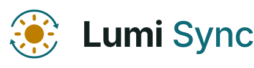
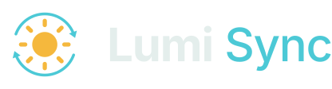

Política de privacidade
Lumi Sync · atualizada em 21/10/2026
O que o Lumi Sync acessa
- Google Drive, com a permissão
drive.file: o Lumi Sync só consegue ver e alterar os arquivos que ele mesmo criou (a pastaSaveSynccom os seus saves). Ele não lê nenhum outro arquivo do seu Drive. - Seu endereço de e-mail do Google: lido apenas para mostrar qual conta está conectada.
- Pastas de saves no seu computador: as que você escolher sincronizar.
Para onde os dados vão
- Os saves vão somente para o seu Google Drive. Não existe servidor do Lumi Sync: nenhum dado é enviado ao desenvolvedor ou a terceiros.
- O login do Google fica guardado no seu computador, cifrado pelo Windows (só o seu usuário consegue ler).
- As verificações de atualização consultam o GitHub (
github.com/DevRicart/savesync-releases), sem enviar dados pessoais.
Como remover
- No Lumi Sync: Configurações → Sair do Google (revoga o acesso).
- Ou em myaccount.google.com/permissions, remova o acesso do Lumi Sync.
- Para apagar os saves da nuvem, apague a pasta
SaveSyncdo seu Google Drive.
Contato
Dúvidas: abra uma issue em github.com/DevRicart/savesync-releases.